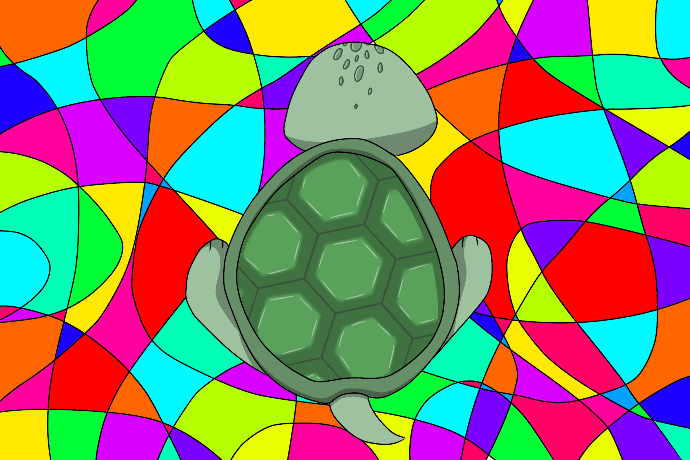
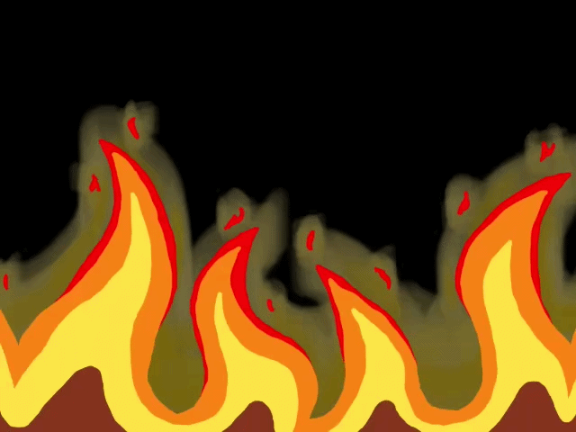
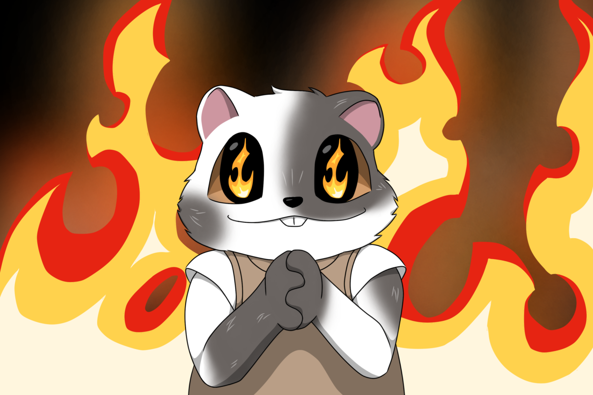

One-paragraph summary
Every week, a fresh 6900 × 6700 white canvas opens. Anyone can claim a pixel by burning hART. Pricing scales with day-of-week and how many times a pixel has already been painted, which keeps the early canvas cheap and contested zones expensive. After 7 days the canvas locks, archives to the wall with full painter attribution, and is auctioned. 100% of the auction proceeds are burned on-chain via a public burn address — verifiable by anyone.
Lifecycle
- OPEN Monday 00:00 UTC: a new blank canvas opens.
- PAINT 7 days of open painting. Pricing curve climbs each day.
- LOCK At T+7d the canvas freezes. State is snapshotted.
- AUCTION A single-winner auction opens for the locked canvas.
- BURN The full winning bid is burned. Tx hash is published.
- SHIP The canvas asset goes to the buyer; the wall keeps full painter attribution forever.
Pricing
Two curves: fresh claim for white pixels, overwrite for already-painted ones.
Fresh claim — scarcity × time
cost = base × day_multiplier base = 1 hART day_multiplier: d1=1, d2=1, d3=2, d4=3, d5=4, d6=5, d7=7
Overwrite — anti-grief curve
cost = day_multiplier × 2 ^ times_painted
| Times painted | Day 1 | Day 4 | Day 7 |
|---|---|---|---|
| 1 (first overwrite) | 2 | 6 | 14 |
| 3 | 8 | 24 | 56 |
| 5 | 32 | 96 | 224 |
| 8 | 256 | 768 | 1,792 |
Anti-grief rules
- CAP No wallet may paint more than 10% of the canvas in a single week.
- CURVE Overwrite cost doubles per repaint and multiplies by day index — late-week carpet-bombing is uneconomical.
- MOD Mods can remove TOS-violating regions. Pixels return to white but retain their
times_paintedcounter, so re-griefing the same coords still costs more. - FORFEIT Mod-removed pixels are not refunded. Removed = forfeited.
Section mode — outline-based painting
Alongside the open pixel canvas, HART runs a second mode built around numbered outlines.
An artist uploads a line drawing; once an admin approves it, the outline becomes an active
canvas split into numbered regions. Painters claim one region at a time, fill it in using the
in-page editor (the same toolset as hart-paint.html), and submit it for mod review.
When every section is approved, the finished piece goes to live auction — but unlike pixel
canvases, the proceeds are split between the artist, the platform, and the burn.
Lifecycle of an outline canvas
- UPLOAD An artist submits a line-art outline via
upload.html. - APPROVE An admin reviews and approves the outline. It appears in Active canvases.
- CLAIM A painter connects their Phantom wallet, picks a canvas, and clicks a numbered section.
- BURN Claiming burns HART on-chain and locks that section to the painter's wallet.
- PAINT The painter fills the section using fill, brush, airbrush, eraser, undo, and the palette / custom color picker.
- REVIEW Painter submits for mod approval. Mods accept (paint goes live on the wall) or reject (section returns to the pool).
- COMPLETE When every section is approved, the canvas locks and goes to auction. The winning bid is split: 55% artist / 5% platform / 40% burn (see settlement flow below).
Painting flow — what the painter sees
- Hover any numbered region — a tooltip shows its number and status (open / claimed / done).
- Click to select. The right-hand panel reveals the palette, tools, daily-claim bar, and the burn cost.
- Press Claim section. A Phantom transaction burns the cost shown; once confirmed, only that wallet can paint inside the region.
- Paint inside the section. Strokes are clipped to the outline mask — color cannot bleed past the lines.
- Press Submit for approval. The section enters the mod queue; the painter can keep claiming elsewhere while it's reviewed.
Section claim cost & daily limit
Cost is per-painter and resets on a 24-hour rolling window. Hard cap: 10 sections claimed per wallet per day.
| Sections claimed in last 24h | Cost of next claim |
|---|---|
| 0–4 (first 5) | 100 HART |
| 5–7 (next 3) | 150 HART |
| 8–9 (final 2) | 200 HART |
| 10 | Locked — wait for the rolling window to clear |
Bidding on the finished outline
Auctions on completed outline canvases use the same single-winner format as pixel canvases, with one extra anti-spam rule: placing a bid burns 50 HART per attempt as a sybil-resistance fee. The bid burn is permanent regardless of whether the bid wins.
Unlike pixel canvases, outline canvases do not burn 100% of the winning bid — the artist who uploaded the outline gets paid. The top bid splits as follows:
| Slice | % of winning bid | Destination |
|---|---|---|
| Artist payout | 55% | Wallet of the outline uploader (50% base + 5% remittance thank-you) |
| Platform retain | 5% | Platform wallet — operations |
| Burn | 40% | On-chain burn address — tx hash published |
Settlement flow — two-step remittance
Funds do not split automatically. The winner pays the artist; the artist then forwards the platform/burn slice. Each step has its own 24-hour deadline.
- Step 1 — Winner → Artist (24h): the winning bidder sends 100% of the bid directly to the outline artist's wallet within 24 hours of auction close. If they miss the window, the bidder forfeits the artwork.
- Step 2 — Artist → Platform (24h): once the artist has confirmed receipt of the full bid, they have 24 hours to forward 45% of the total to the platform wallet. The platform then burns 40% (of total) on-chain and retains 5%. The artist keeps the other 55% as their payout.
What happens if a step is missed
- BIDDER FORFEIT Step 1 missed → bid voided, artwork unsold, failure posted on HART's channels (Discord / X). Canvas re-enters auction at the next 10:20 Europe/Berlin slot (same day if before 10:20 Berlin, otherwise the next day).
- ARTIST DELIST Step 2 missed → the artist's account is subject to delisting: their existing artworks are removed from the platform.
- UPLOAD LOCK From the moment an artist confirms receipt of a winning bid, they cannot upload any new outlines until they have remitted the 45% — regardless of how much time has passed. The 24h clock governs delisting; the upload lock is open-ended.
- NO REFUND The 50 HART bid-burn is permanent regardless. Anti-sybil fees never come back.
Auction & burn flow

- Canvas closes after 7 days. State frozen, wall snapshot generated.
- Auction opens for a fixed window (single highest-bid wins).
- Funds settle to the platform wallet (a relay, not custody).
- The full amount is burned on-chain via a public burn address. Tx is announced.
- Canvas asset is delivered to the buyer. Buyer can choose public profile display or private hold.
- The wall always keeps each painter's attribution — wallet + display name + pixel count.
Unsold canvases
- If the auction closes with no qualifying bid, the canvas rolls into the Gallery at fixed buy-now pricing.
- Whenever a gallery canvas eventually sells, the same burn-and-ship flow runs — funds are still 100% burned.
Painter & buyer rights

| Role | Receives |
|---|---|
| Auction winner | Canvas asset · public/private display toggle on profile · permanent buyer credit on the wall |
| Every painter | Wall attribution: wallet + display name + total pixels contributed, visible on the canvas detail page |
| Mods | Region-removal tooling · audit log of all removals |
Data model — shape only
weekly_canvas (id, week_start, week_end, state, buyer, sale_amount, burn_tx) canvas_pixel (canvas_id, x, y, color, current_owner, times_painted, last_paint_at) paint_event (append-only audit: canvas, x, y, wallet, color, cost, day_index) wallet_canvas_stats (canvas_id, wallet, pixels_painted) — enforces 10% cap cheaply
Field names and column types are illustrative — the live schema is the source of truth. The shape is what matters: pixels are state, paint_events are the append-only audit, stats are a cheap rollup.